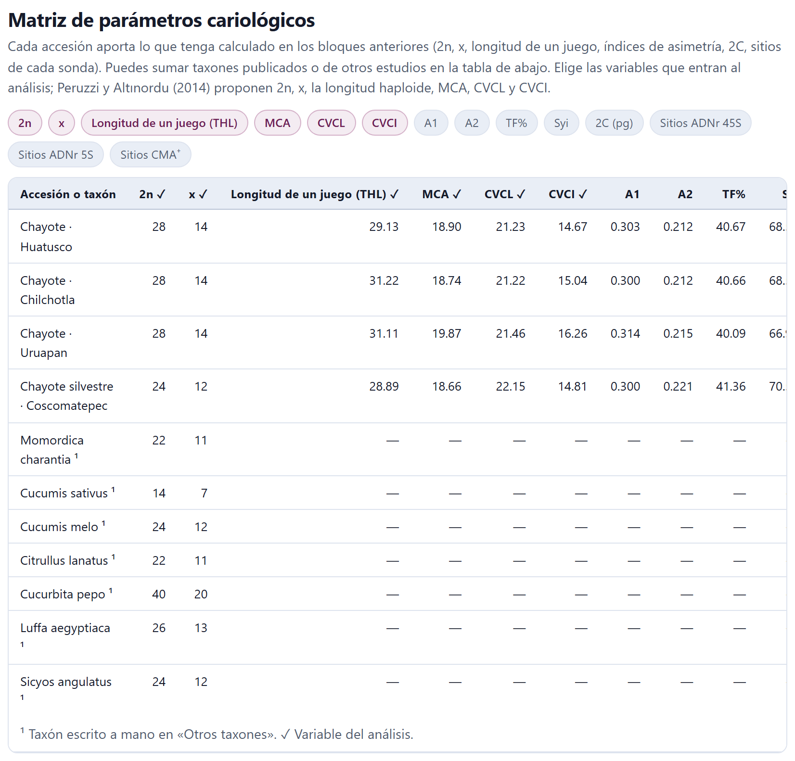
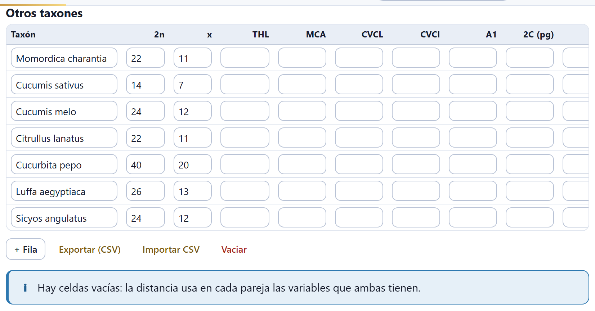
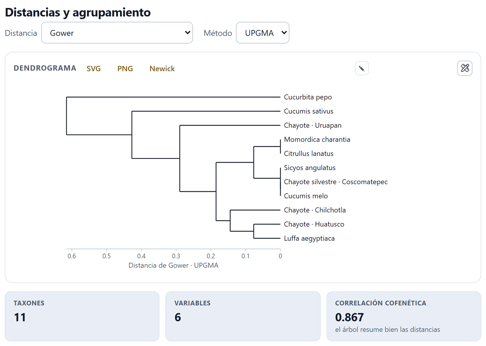
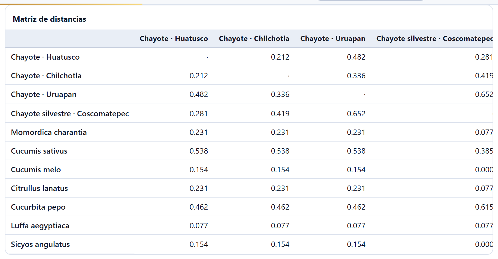
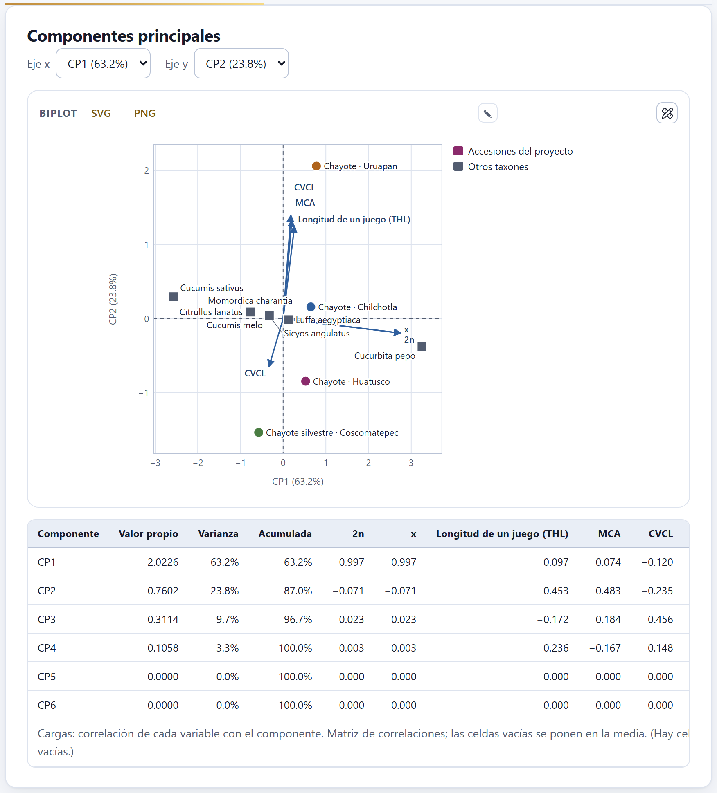
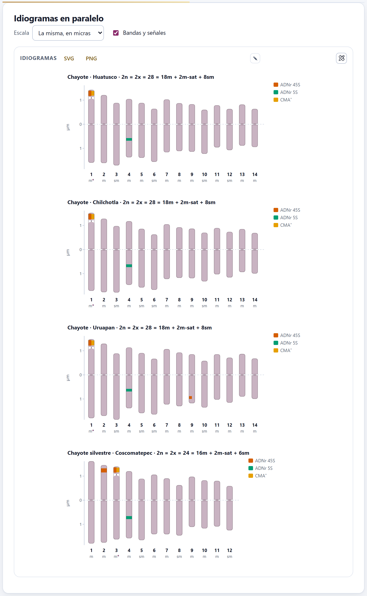
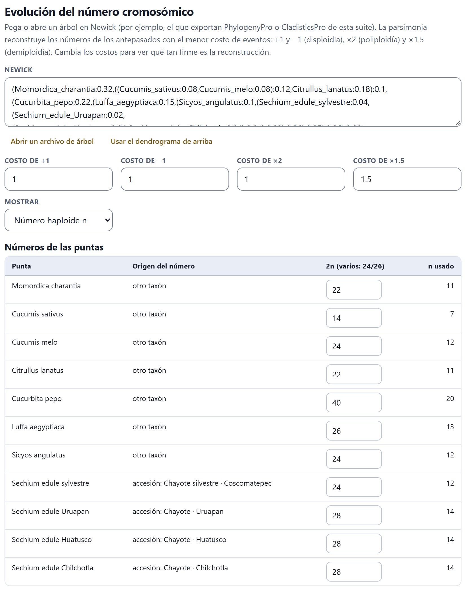
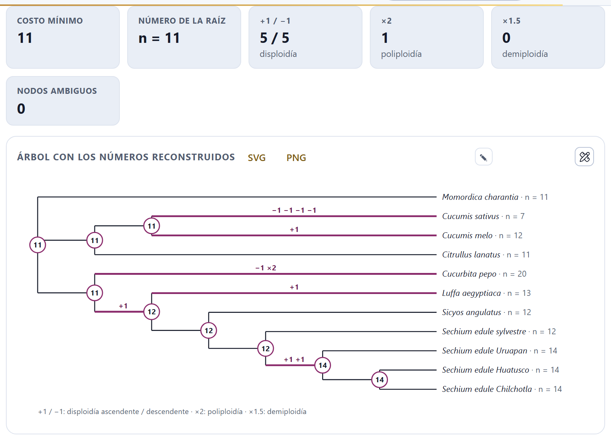
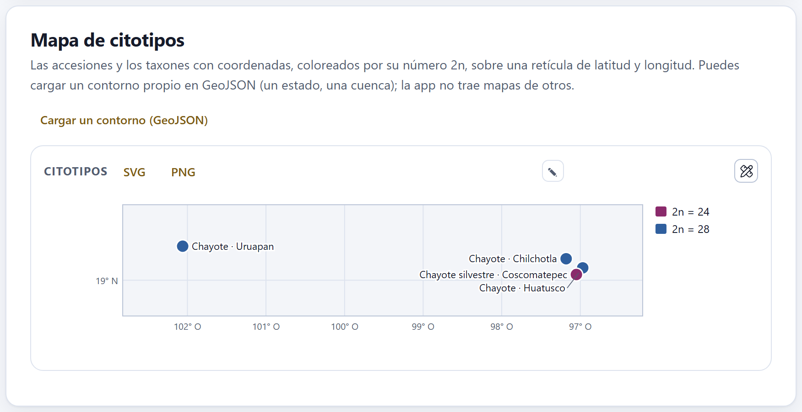

Lo que los bloques anteriores calcularon para cada accesión, puesto en una sola matriz junto con los taxones publicados que quieras sumar: sus distancias cariológicas y el dendrograma, los componentes principales, los idiogramas a la misma escala, la evolución del número cromosómico sobre un árbol y un mapa de los citotipos.
El bloque no tiene selector de accesión: trabaja con todas a la vez. Todo el capítulo usa el ejemplo del chayote, que trae las cuatro accesiones de Sechium edule con su cariotipo, sus índices y sus señales, siete cucurbitáceas más escritas a mano con su 2n y su x, las coordenadas de las localidades y un árbol ilustrativo en Newick. Los datos son simulados y el árbol no es una filogenia publicada.
Cada accesión aporta lo que tenga calculado: el 2n (la moda de sus conteos del Bloque 6 o, si no tiene, el de su cariotipo), el x, la longitud de un juego (THL) y los índices de asimetría del Bloque 4, el 2C medio de su citometría y el número de sitios de cada sonda del Bloque 7.
Entra a la matriz toda accesión que tenga al menos 2n, THL, 2C o alguna señal. Los chips de arriba eligen las variables del análisis: 2n, x, Longitud de un juego (THL), MCA, CVCL, CVCI, A1, A2, TF%, Syi, 2C (pg) y una variable «Sitios …» por cada sonda con señales. Por omisión están encendidas las seis que proponen Peruzzi y Altınordu (2014): 2n, x, la longitud haploide, MCA, CVCL y CVCI. Un clic enciende o apaga una.

La tabla muestra todas las variables que alguna fila tiene, elegidas o no, para que veas qué hay disponible. Los taxones escritos a mano llevan ¹.
La tabla Otros taxones, debajo de la matriz, suma taxones publicados o de otros estudios: Taxón, 2n, x, THL, MCA, CVCL, CVCI, A1, 2C (pg), Latitud y Longitud. Se escribe a mano, se pega o se importa en CSV; al importar, la columna del nombre puede llamarse también «especie» o «species».

Con las variables elegidas, la app calcula una distancia cariológica entre cada par de filas y las agrupa en un dendrograma. Hacen falta al menos tres accesiones o taxones con datos.
Distancia ofrece dos:
Método elige el agrupamiento: UPGMA, el promedio de las distancias entre grupos (Sneath y Sokal 1973), o Ward, que une los grupos que menos aumentan la varianza dentro de ellos (Ward 1963); la app lo aplica sobre las distancias al cuadrado y da las alturas en la escala de la distancia. El dendrograma se descarga en SVG o PNG o, con Newick, como texto de árbol (dendrograma_upgma.nwk o dendrograma_ward.nwk) para abrirlo en otros programas.

Debajo del dendrograma, tres cifras: Taxones, Variables y la Correlación cofenética, la correlación entre las distancias originales y las que se leen en el árbol (Sokal y Rohlf 1962). Si es de 0.8 o más, la app dice «el árbol resume bien las distancias»; si es menor, advierte que el árbol las deforma. Al final, la Matriz de distancias completa.

Cuando faltan datos, la distancia usa en cada pareja sólo las variables que ambas filas tienen, y un aviso lo recuerda («Hay celdas vacías…»). En el ejemplo, los siete taxones escritos a mano sólo tienen 2n y x; entre ellos y las accesiones, la distancia se calcula únicamente con esos dos números, que además dicen lo mismo (x = 2n / 2 en todos). Por eso la silvestre (2n = 24) queda a distancia cero de Cucumis melo y de Sicyos angulatus, y Huatusco (2n = 28) a 0.077 de Luffa (2n = 26), mientras que entre dos chayotes, comparados con las seis variables, las pequeñas diferencias de THL, MCA, CVCL y CVCI suman más. El árbol no está mal calculado: responde a una pregunta mal planteada. Compara filas con las mismas variables, o reduce las variables a las que todas tienen.
Con el mismo ejemplo, la distancia euclidiana con UPGMA da una correlación cofenética de 0.911, y Gower con Ward 0.851; las tres dibujan los mismos grupos, porque el problema de arriba no depende del método.
El análisis de componentes principales resume las variables en unos pocos ejes que no se correlacionan entre sí (Jolliffe 2002). La app lo calcula sobre la matriz de correlaciones, con las variables que varían, y lo dibuja como un biplot (Gabriel 1971): los puntos son las filas y las flechas las variables.
Eje x y Eje y eligen qué componentes se dibujan; cada opción dice cuánta varianza explica. En el biplot, las accesiones del proyecto van en círculos con su color y los otros taxones en cuadrados grises. Una flecha larga en la dirección de un eje dice que esa variable pesa en ese componente; dos flechas juntas, que las variables van de la mano. La tabla de abajo da, por componente, el Valor propio, la Varianza, la Acumulada y las cargas de cada variable, que son sus correlaciones con el componente.

El análisis pone las celdas vacías en la media de su variable, y la tabla lo dice con «(Hay celdas vacías.)». En el ejemplo, los siete taxones escritos a mano quedan en la media de THL, MCA, CVCL y CVCI, y sólo se separan por el CP1. Como 2n y x son redundantes, los dos últimos componentes tienen valor propio 0.0000: la información de seis variables cabe en cuatro.
Si menos de dos variables varían, no hay análisis de componentes, y la app lo avisa.
Los idiogramas de todas las accesiones con cariotipo, uno debajo de otro, a la misma escala y con su fórmula en el título: la figura que muestra de un vistazo en qué se parecen y en qué no.
Escala elige entre La misma, en micras, que respeta los tamaños reales, y Longitud relativa (%), que pone cada cromosoma como porcentaje de su juego y compara sólo las proporciones. La casilla Bandas y señales pone o quita las marcas del Bloque 7.

Sobre un árbol de los taxones, la parsimonia reconstruye los números cromosómicos de los antepasados: busca la historia con el menor costo total de eventos (Sankoff 1975). Los eventos son los de los modelos de evolución del número (Mayrose et al. 2010): +1 y −1, la disploidía ascendente y descendente; ×2, la poliploidía, y ×1.5, la demiploidía.
Escribe o pega el árbol en Newick, ábrelo con Abrir un archivo de árbol (Newick o NEXUS; de un NEXUS se toma el primer árbol) o usa Usar el dendrograma de arriba, que copia el dendrograma de la sección 8.2. Los cuatro costos se cambian en Costo de +1, Costo de −1, Costo de ×2 y Costo de ×1.5 (1, 1, 1 y 1.5 por omisión), y Mostrar elige si el árbol escribe el Número haploide n o el Número somático 2n. La app trabaja siempre con números haploides.

La tabla Números de las puntas dice de dónde sale el número de cada punta: de una accesión (por el nombre, el taxón o la correspondencia que trae el ejemplo), de otro taxón, escrito aquí o sin número. En la columna 2n (varios: 24/26) puedes escribir el número a mano, o varios separados por diagonal cuando la especie tiene más de un citotipo; lo escrito manda sobre lo que viene de las accesiones, y borrarlo devuelve el automático. La última columna da el n usado. Un 2n impar no tiene número haploide entero y queda fuera, con un aviso; una punta sin número se trata como desconocida.

Las cifras de arriba del árbol son el Costo mínimo, el Número de la raíz, cuántos eventos de cada clase hay en la historia mostrada y los Nodos ambiguos, los que tienen más de un número igual de parsimonioso. En el árbol, cada nodo lleva su número en un círculo, las ramas con eventos van resaltadas y rotuladas con ellos, y los nodos ambiguos llevan borde punteado y sus otros números óptimos debajo: el árbol muestra una de las historias óptimas, no la única.
Sube el Costo de ×2 de 1 a 3. El costo mínimo pasa a 11.5: la duplicación desaparece y la historia usa una demiploidía y diez eventos de uno en uno (seis +1 y cuatro −1), y aparecen cuatro nodos ambiguos. La raíz sigue en n = 11. Lo que no cambia al mover los costos es lo firme de la reconstrucción; lo que cambia, depende de supuestos y conviene decirlo así.
El costo de pasar de un número a otro es la secuencia más barata de eventos que lo logra: de 7 a 12, cinco +1 o una duplicación y dos −1, lo que cueste menos con los costos elegidos. El algoritmo recorre el árbol de las puntas a la raíz calculando, para cada nodo y cada número posible, el costo mínimo de lo que cuelga de él; la raíz se queda con el número de menor costo, y de ahí se desciende eligiendo en cada nodo un número óptimo. La parsimonia no usa las longitudes de las ramas ni da probabilidades: para eso están los modelos de Mayrose et al. (2010).
Las accesiones y los taxones con coordenadas, como puntos coloreados por su 2n sobre una retícula de latitud y longitud.
Las coordenadas de una accesión se escriben en su ficha, en el Bloque 2; las de los otros taxones, en las columnas Latitud y Longitud de su tabla. La app no trae mapas de otros: con Cargar un contorno (GeoJSON) puedes poner uno propio (un estado, una cuenca), y Quitar el contorno lo retira. La leyenda da un color por cada 2n, y gris para las filas sin número.

| Si la correlación cofenética es ≥ 0.8 | entonces el dendrograma resume bien las distancias; si es menor, léelo con cuidado o usa el biplot. |
| Si hay celdas vacías | entonces cada pareja se compara con las variables que comparte: compara filas con las mismas variables. |
| Si dos variables dicen lo mismo (2n y x en diploides) | entonces pesan doble en la distancia: quita una. |
| Si un componente tiene valor propio 0 | entonces hay variables redundantes; no lo interpretes. |
| Si la raíz o un evento cambian al mover los costos | entonces esa parte de la reconstrucción depende de supuestos. |
| Si hay nodos ambiguos | entonces el árbol muestra una de varias historias igual de buenas. |
Guías para interpretar, no leyes.
«Hacen falta al menos tres accesiones o taxones con datos». Suma accesiones con cariotipo o conteos, o taxones en «Otros taxones».
«Estas parejas no comparten ninguna variable». Dos filas no tienen ninguna variable elegida en común; quita variables o completa los datos.
«Elige al menos una variable». Todos los chips están apagados.
Una punta del árbol queda «sin número». Su nombre no coincide con ninguna accesión ni taxón: escribe su 2n en la tabla de las puntas o corrige el nombre (los guiones bajos del Newick cuentan como espacios).
Error al leer el Newick. El mensaje dice qué falta («Falta un paréntesis de cierre…») o qué sobra al final.
El mapa sale vacío. Ninguna fila tiene latitud y longitud.
«El archivo no es un GeoJSON válido». El contorno debe ser un objeto GeoJSON (una colección, un elemento, un polígono o una línea).